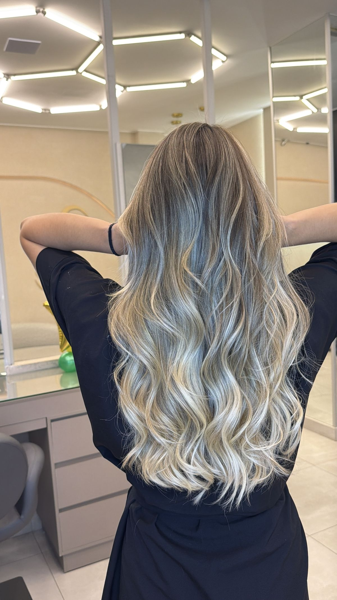
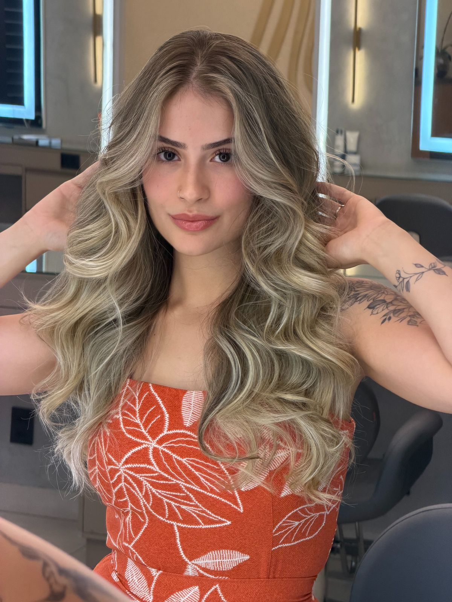
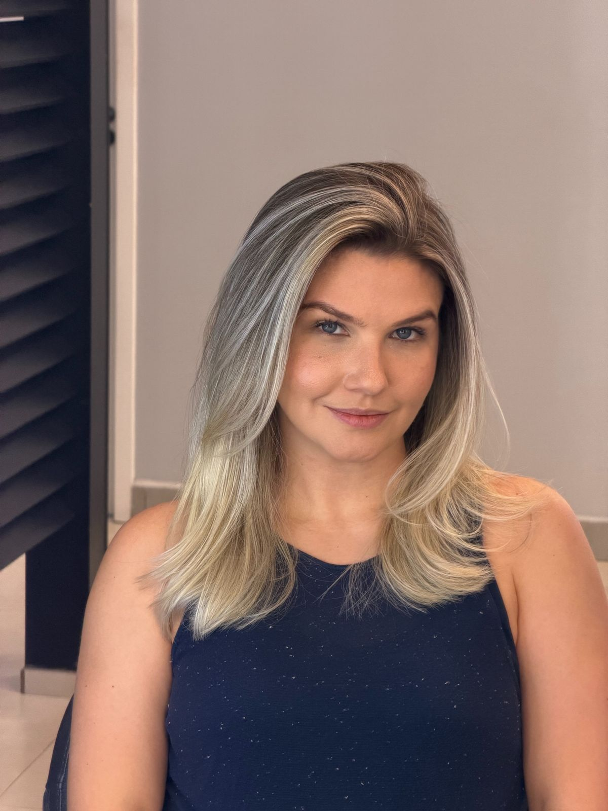
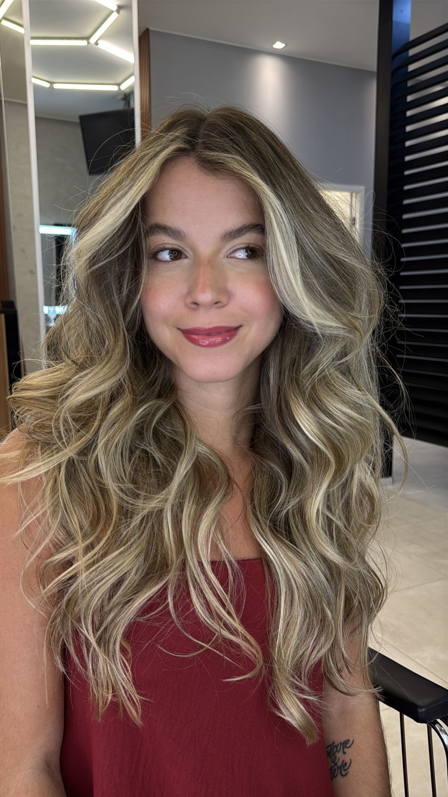

Mechas no Sudoeste, Brasília
O Jesus Salon é um salão do Sudoeste especializado em iluminação capilar. Mechas feitas sob medida para o seu tom de pele, o seu corte e a rotina que você tem para cuidar do cabelo.
O que são mechas
Mechas são técnicas de clareamento aplicadas em fios selecionados, e não no cabelo inteiro. O objetivo é criar contraste e profundidade, dando a impressão de volume e movimento mesmo em cabelos lisos e finos.
Dentro desse guarda-chuva existem variações conhecidas como luzes, balayage, babylights e ombré. Elas mudam na forma de aplicação, na espessura do fio selecionado e no ponto do comprimento em que o clareamento começa. O que define qual delas cai melhor em você é o tom natural do fio, o histórico de química e o resultado que você quer.
Como funciona no Jesus Salon
Antes de qualquer procedimento a equipe faz uma avaliação do fio. Essa conversa define a técnica, o tom de destino e em quantas sessões dá para chegar lá com segurança, principalmente em cabelos que já passaram por coloração ou alisamento.
Cada cabelo reage de um jeito, então tempo de execução e valores variam conforme o comprimento, a densidade e o histórico do fio. Esses detalhes a equipe passa no WhatsApp, depois de entender o seu caso.
Para quem as mechas funcionam bem
Mechas costumam ser uma boa escolha para quem quer iluminar o visual sem mudar radicalmente a cor, para quem quer disfarçar a raiz com menos manutenção e para quem quer dar dimensão a um corte reto.
Se você quer clarear mantendo a base escura, vale olhar também a morena iluminada, que é uma iluminação mais suave e com transição mais natural.
Trabalhos do Jesus Salon




Dúvidas sobre mechas
Quanto custa fazer mechas no Jesus Salon?
O valor depende do comprimento, da densidade do cabelo e do histórico de química do fio. A equipe passa o orçamento pelo WhatsApp (61) 99443-1731 depois de avaliar o seu caso.
Quanto tempo demora para fazer mechas?
O tempo varia conforme o comprimento do cabelo e a técnica escolhida. Na avaliação inicial a equipe informa a previsão para o seu caso.
Dá para fazer mechas em cabelo que já tem coloração?
Depende do histórico do fio. Cabelos com coloração ou alisamento anterior exigem avaliação antes, e em alguns casos o clareamento é feito em mais de uma sessão para preservar a saúde do cabelo.
Onde fazer mechas no Sudoeste?
O Jesus Salon fica na CLSW 101, Bloco B, no subsolo do Multiplus Shopping, no Sudoeste, Brasília-DF, e atende de segunda a sábado das 9h às 18h.
Como agendar mechas?
Pelo WhatsApp (61) 99443-1731. A equipe consulta os horários disponíveis e orienta sobre a avaliação do fio.
Onde fica o salão
O Jesus Salon fica na CLSW 101, Bloco B, nº 37/43, no subsolo do Multiplus Shopping, no Sudoeste, Brasília-DF. O atendimento é de segunda a sábado, das 9h às 18h.
Atendemos clientes do Sudoeste, da Octogonal, do Cruzeiro e de toda Brasília. Ver no Google Maps.
Veja também: Morena iluminada em Brasília.
Vamos conversar sobre o seu cabelo?
Chame no WhatsApp e consulte os horários disponíveis.
Agendar no WhatsApp